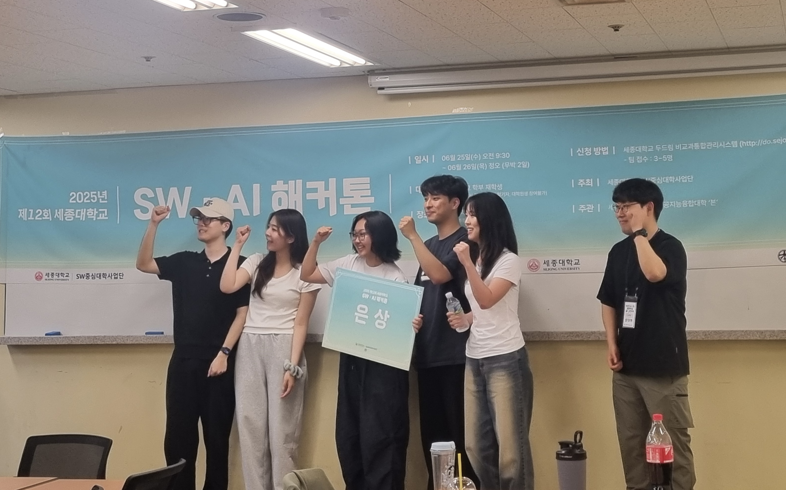

돈가스와 도라에몽을 좋아하는 개발자
안녕하세요! 저는 세종대학교에서 전자정보통신공학과와 소프트웨어학과를 복수전공하고 있는 4학년 학생입니다.
Computer Vision, 백엔드 개발, 그리고 소프트웨어 전반에 큰 관심을 가지고 있습니다.
새로운 기술과 도전을 즐기며, 다양한 프로젝트에 참여하고 있습니다.
언어: Python, C, C++, Java, Swift, Markdown
프레임워크 & 라이브러리: PyTorch, OpenCV, FastAPI, Spring, Flask, OpenGL, ROS, Unreal Engine
데이터베이스: MariaDB, MySQL, MongoDB
DevOps & 툴: GitHub Actions, Docker, Nginx, Raspberry Pi, Arduino, Postman, Notion, Anaconda, nVIDIA CUDA
OS: Linux, macOS, Windows
2025 제 12회 세종대학교 SW•AI 해커톤 - 은상 🥈
CLIP 기반으로 유사 물건 이름과 설명 추출, DINOv2 + MongoDB를 활용한 이미지 매칭 및 알림 시스템 구축.
GitHub 레포지토리FAISS와 Sentence Transformer로 벡터 기반 유사도 검색 및 GPT API 기반 추천 시스템 구현.
GitHub 레포지토리Apple Vision Pro와 ARKit/RealityKit을 활용해 가구 이미지를 3D로 재구성하고 실제 공간에 배치.
Camera Actor view 캡처 및 HTTP 통신 기반 실시간 이미지 전송, Apple Vision Pro와의 연동 구현.
Email: arenran02@naver.com
GitHub: arenran02